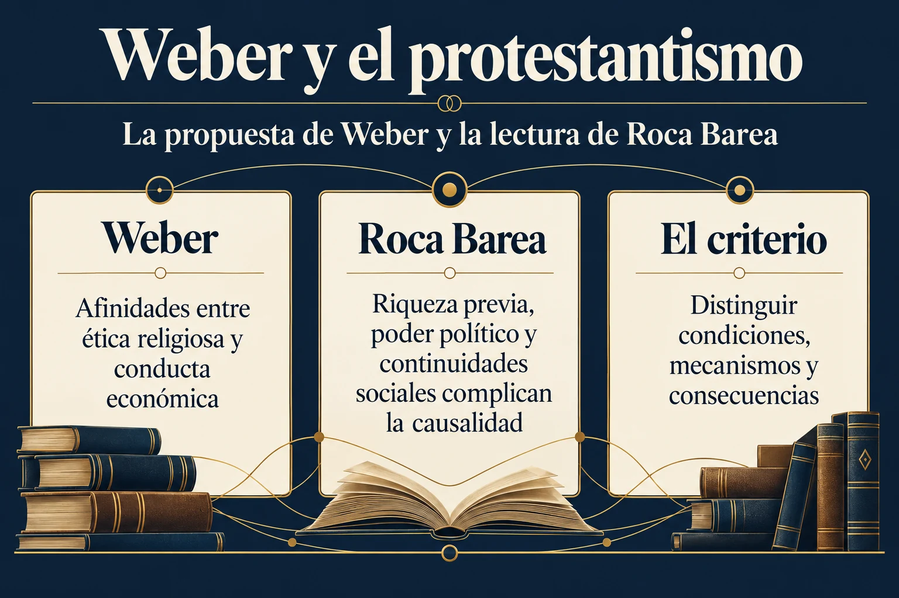

Volumen 3 · Capítulo 11 · Entrega 34
Por qué Weber ocupa un lugar central en Fracasología
Estudio expositivo de Fracasología de María Elvira Roca Barea
Max Weber interesa a Roca Barea por la unión de dos asuntos que el libro venía desarrollando: el prestigio del pensamiento germánico y la aceptación española de explicaciones que presentan la cultura propia como un obstáculo. El capítulo no ofrece una visión general de toda la sociología weberiana. Se concentra en La ética protestante y el “espíritu” del capitalismo, en su razonamiento y en su recepción. Esta delimitación explica la intensidad y la extensión del comentario: el ensayo sirve a la autora como un caso particularmente influyente de transformación de una diferencia histórica en una jerarquía moral.
La recepción española aparece desde el principio. Apoyándose en el estudio de Yolanda Ruano, Roca Barea recuerda el interés de Maeztu por una relación entre deber profesional, trabajo, dinero y modernización. Si el capitalismo necesitaba una disposición ética que el catolicismo no había producido, el atraso español podía entenderse como una insuficiencia moral. La cuestión pasaba a ser cómo incorporar esa disposición. Para la autora, ese planteamiento no examinaba suficientemente la explicación importada: daba por establecido lo que debía probar, esto es, la incapacidad de una cultura para generar por sí misma trabajo disciplinado, confianza y prosperidad.
El libro relaciona esta recepción con el prestigio más amplio del alemán como lengua del pensamiento. Roca Barea recuerda su propia experiencia escolar para ilustrar la difusión de la idea de que el español no era adecuado para la filosofía. El ejemplo autobiográfico no funciona como una estadística educativa, sino como testimonio de una forma de valoración cultural que considera extendida. Su recordatorio de la filosofía española escrita en latín impugna la identificación entre la producción intelectual de una sociedad y el prestigio moderno de una lengua determinada. El problema del reconocimiento precede, por tanto, al examen de los argumentos de Weber.
La presentación biográfica busca situar el ensayo en la trayectoria de su autor. Roca Barea describe el origen de Weber en una familia acomodada, la actividad política del padre y la religiosidad calvinista familiar. Subraya el contraste entre una madre rigurosa y un padre más dispuesto al disfrute de la vida, así como los conflictos que habrían marcado al hijo. Resume su carrera universitaria, las crisis de salud que interrumpieron la docencia, la continuidad de su escritura y su actividad durante y después de la Primera Guerra Mundial. El hilo conductor de esa selección es la tensión entre disciplina, sufrimiento y justificación de una forma de vida.
La autora formula a partir de ella una interpretación psicológica: Weber habría buscado otorgar sentido histórico al rigorismo de su medio religioso y a su propia experiencia. Es una hipótesis interpretativa de Roca Barea, no una demostración clínica ni una intención confesada por Weber. Mantener esa condición resulta necesario para seguir con precisión el argumento. La explicación biográfica permite entender por qué ella sospecha de la orientación del ensayo; sus objeciones posteriores intentarán mostrar esa orientación en los conceptos, los ejemplos y las inferencias del texto.
Publicado inicialmente en 1904 y 1905 y revisado en 1920, el ensayo se convirtió, según el libro, en una referencia decisiva para explicar el desarrollo capitalista. Ese alcance vuelve relevante su lectura española: una teoría puede influir mucho más allá del ámbito para el que se formuló y convertirse en una imagen del valor de otras sociedades. El capítulo examina precisamente ese tránsito. Roca Barea pregunta cómo se ha razonado, qué se ha seleccionado y por qué la autoridad del autor ha podido reducir la disposición a interrogarlo. La primera operación de su comentario será detenerse en el título, donde considera que la jerarquía está ya insinuada.


Ampliar imagenLeer el esquema y sus referencias
- La propuesta de Weber. Afinidades entre ética religiosa y conducta económica
- La lectura de Roca Barea. Riqueza previa, poder político y continuidades sociales complican la causalidad
- El criterio de lectura. Distinguir condiciones, mecanismos y consecuencias
Fuente de lectura: Roca Barea, Fracasología (2019), apartado desarrollado en la entrega 34. Esquema expositivo de la interpretación de la autora; no cita literal.
El esquema separa la propuesta de Weber y la lectura de Roca Barea. Se retiran mapas confesionales generados y retratos cuya identificación no estaba documentada.
Referencia de la entrega y criterio de lectura
Roca Barea, 2019, cap. 11, «El idealismo alemán contra la realidad» y «Max Weber: el hombre y su circunstancia», notas 429–430.
El texto reconstruye el argumento de Roca Barea. Las alusiones a otras obras proceden del ensayo y no implican la consulta independiente de todas ellas. Criterio editorial de la colección.
Referencia de la entrega. Roca Barea, 2019, cap. 11, «El idealismo alemán contra la realidad» y «Max Weber: el hombre y su circunstancia», notas 429–430.